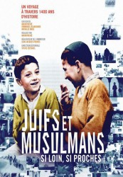

")
 
 IMDB-Wertung: 7.8 / 10
IMDB-Wertung: 7.8 / 10  Metascore:
Metascore: 
Die besondere Beziehung zwischen Juden und Moslems in den vergangenen 1.400 Jahren ist Gegenstand dieser vierteiligen Dokumentationsreihe. Sie erzählt von der Entstehung des Islams auf der arabischen Halbinsel im 7. Jahrhundert unserer Zeitrechnung, von der Maurenherrschaft in Andalusien und im Maghreb, vom Leben der Juden im Osmanischen Reich; und sie referiert die Geschichte Jerusalems bis hin zur Zweiten Intifada.
Jahr: 2013
Dauer: 52 Minuten
FSK:
Land: Frankreich Studio: ArteTonspuren:
Untertitel:
Auflösung: 720p (1280x720) Größe: 1566 MB
Genre: Dokumentation, TV-Serie
Regisseur: Karim Miské
Drehbuch: Terrel Seltzer
Soundtrack:
Darsteller:
Datei: X:\Dokumentationen\Kirche\Juden & Muslime\01 Gründen, beginnen 610 – 721.mkv seit 09.05.2017
Festplatte: HD Serien(SU-Z)+Dokus+Musik
 Es gibt insgesamt 19 Filme in der Gruppe 'Dokumentationen\Kirche'
Es gibt insgesamt 19 Filme in der Gruppe 'Dokumentationen\Kirche'